| Symbol |
Description |
ADXL343 | Description: 3-Axis MEMS Accelerometer, 2/4/8/16g range, I2C/SPI, LGA-14
Keys: 3-axis accelerometer i2c spi mems
Datasheet: https://www.analog.com/media/en/technical-documentation/data-sheets/ADXL343.pdf |
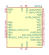
BMF055 | Description: Custom programmable 9-axis motion sensor
Keys: 9-axis motion sensor IMU SAMD20 ARM Cortex-M0+
Datasheet: https://ae-bst.resource.bosch.com/media/_tech/media/datasheets/BST-BMF055-DS000.pdf |
BMI160 | Description: Small, low power inertial measurement unit, LGA-14
Keys: Bosh IMU small low power inertial measurement unit
Datasheet: https://ae-bst.resource.bosch.com/media/_tech/media/datasheets/BST-BMI160-DS000.pdf |
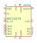
BNO055 | Description: Intelligent 9-axis absolute orientation sensor, LGA-28
Keys: IMU, Sensor Fusion, I2C, UART
Datasheet: https://ae-bst.resource.bosch.com/media/_tech/media/datasheets/BST_BNO055_DS000_14.pdf |
ICM-20602 | Description: High performance 6-Axis MEMS motion tracking, SPI/I2C interface, LGA-16
Keys: accelerometer gyro mems motion
Datasheet: http://www.invensense.com/wp-content/uploads/2016/10/DS-000176-ICM-20602-v1.0.pdf |
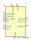
ICM-20948 | Description: InvenSense 9-Axis Motion Sensor, Accelerometer, Gyroscope, Compass, I2C/SPI, QFN-24
Keys: mems magnetometer
Datasheet: http://www.invensense.com/wp-content/uploads/2016/06/DS-000189-ICM-20948-v1.3.pdf |
KX022-1020 | Description: 3-Axis Accelerometer, 2/4/8g range, 256 byte buffer, I2C/SPI interface, LGA-12
Keys: 3-axis accelerometer spi i2c mems
Datasheet: http://kionixfs.kionix.com/en/datasheet/KX022-1020%20Specifications%20Rev%2012.0.pdf |
KX122-1042 | Description: 3-Axis Accelerometer, 2/4/8g range, 2048 byte buffer, I2C/SPI interface, LGA-12
Keys: 3-axis accelerometer spi i2c mems
Datasheet: http://kionixfs.kionix.com/en/datasheet/KX112-1042-Specifications-Rev-6.0.pdf |
KX222-1054 | Description: 3-Axis Accelerometer, 8/16/32g range, 2048 byte buffer, I2C/SPI interface, LGA-12
Keys: 3-axis accelerometer spi i2c mems
Datasheet: http://kionixfs.kionix.com/en/datasheet/KX222-1054-Specifications-Rev-2.0.pdf |
KXTJ3-1057 | Description: 2g / 4g / 8g / 16g Tri-Axis Digital Accelerometer, I2C, 1.71-3.6V, LGA-12
Keys: accelerometer, tri-axis, i2c
Datasheet: http://kionixfs.kionix.com/en/datasheet/KXTJ3-1057-Specifications-Rev-5.0.pdf |
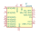
L3GD20 | Description: [Not recommended for new designs] 16-bit 3 Axis Digital MEMS Gyroscope, LGA-16
Keys: 3-Axis MEMS Gyroscope
Datasheet: http://www.st.com/st-web-ui/static/active/en/resource/technical/document/datasheet/DM00036465.pdf |
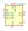
LIS2DE12 | Description: 3-Axis Accelerometer, 2/4/8/16g range, I2C/SPI interface
Keys: 3-axis accelerometer spi mems
Datasheet: https://www.st.com/resource/en/datasheet/lis2DE12.pdf |
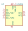
LIS2DH | Description: 3-Axis Accelerometer, 2/4/8/16g range, I2C/SPI interface
Keys: 3-axis accelerometer spi mems
Datasheet: http://www.st.com/web/en/resource/technical/document/datasheet/DM00042751.pdf |
LIS2HH12 | Description: 3-Axis Accelerometer, 2/4/8g range, I2C/SPI interface
Keys: 3-axis accelerometer spi mems
Datasheet: www.st.com/resource/en/datasheet/lis2hh12.pdf |
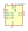
LIS331HH | Description: 3-Axis Accelerometer, 6/12/24g range, 1000Hz, I2C and SPI interface
Keys: 3-axis accelerometer spi i2c mems
Datasheet: http://www.st.com/st-web-ui/static/active/en/resource/technical/document/datasheet/CD00250937.pdf |
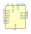
LIS3DH | Description: 3-Axis Accelerometer, 2/4/8/16g range, I2C/SPI interface, LGA-16
Keys: 3-axis accelerometer i2c spi mems
Datasheet: https://www.st.com/resource/en/datasheet/cd00274221.pdf |
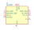
LSM303C | Description: I2C/SPI, 3D Accelerometer and 3D Magnetometer
Keys: Accelerometer Magnetometer MEMS
Datasheet: www.st.com/resource/en/datasheet/lsm303c.pdf |
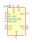
LSM303D | Description: [not recommended for new designs] I2C/SPI, 3D Accelerometer and 3D Magnetometer
Keys: Accelerometer Magnetometer MEMS
Datasheet: http://www.st.com/web/en/resource/technical/document/datasheet/DM00057547.pdf |
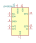
LSM303DLHC | Description: [not recommended for new designs] I2C, 3D Accelerometer and 3D Magnetometer
Keys: Accelerometer Magnetometer MEMS
Datasheet: http://www.st.com/web/en/resource/technical/document/datasheet/DM00027543.pdf |
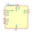
LSM6DS3 | Description: I2C/SPI, iNEMO inertial module: always-on 3D accelerometer and 3D gyroscope
Keys: Accelerometer Gyroscope MEMS
Datasheet: www.st.com/resource/en/datasheet/lsm6ds3.pdf |
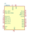
LSM9DS1 | Description: I2C SPI 9 axis IMU accelerometer gyroscope magnetometer
Keys: I2C SPI IMU accelerometer gyroscope magnetometer
Datasheet: http://www.st.com/content/ccc/resource/technical/document/datasheet/1e/3f/2a/d6/25/eb/48/46/DM00103319.pdf/files/DM00103319.pdf/jcr:content/translations/en.DM00103319.pdf |
MMA8653FCR1 | Description: 3-Axis 10-bit Digital Accelerometer with I2C interface
Keys: Accelerometer I2C
Datasheet: http://cache.freescale.com/files/sensors/doc/data_sheet/MMA8653FC.pdf |
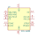
MPU-6000 | Description: InvenSense 6-Axis Motion Sensor, Gyroscope, Accelerometer, I2C/SPI
Keys: mems
Datasheet: https://store.invensense.com/datasheets/invensense/MPU-6050_DataSheet_V3%204.pdf |
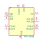
MPU-6050 | Description: InvenSense 6-Axis Motion Sensor, Gyroscope, Accelerometer, I2C
Keys: mems
Datasheet: https://store.invensense.com/datasheets/invensense/MPU-6050_DataSheet_V3%204.pdf |
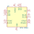
MPU-9150 | Description: InvenSense 9-Axis Motion Sensor, Accelerometer, Gyroscope, Compass, I2C
Keys: mems magnetometer
Datasheet: https://www.invensense.com/wp-content/uploads/2015/02/MPU-9150-Datasheet.pdf |
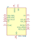
MPU-9250 | Description: InvenSense 9-Axis Motion Sensor, Accelerometer, Gyroscope, Compass, I2C/SPI
Keys: mems magnetometer
Datasheet: https://store.invensense.com/datasheets/invensense/MPU9250REV1.0.pdf |